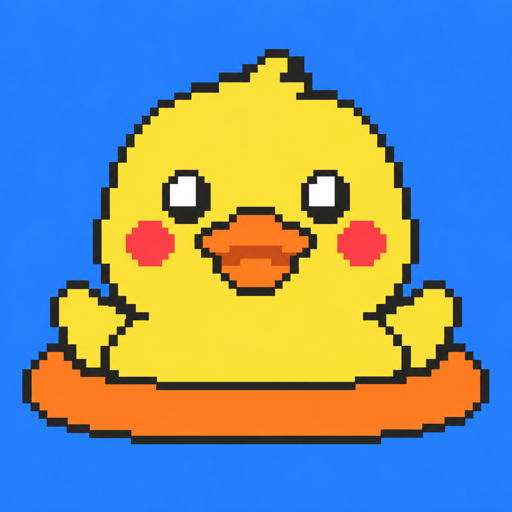
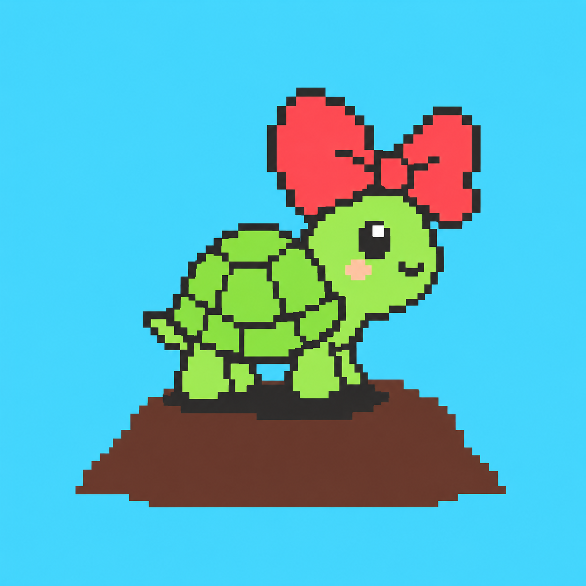
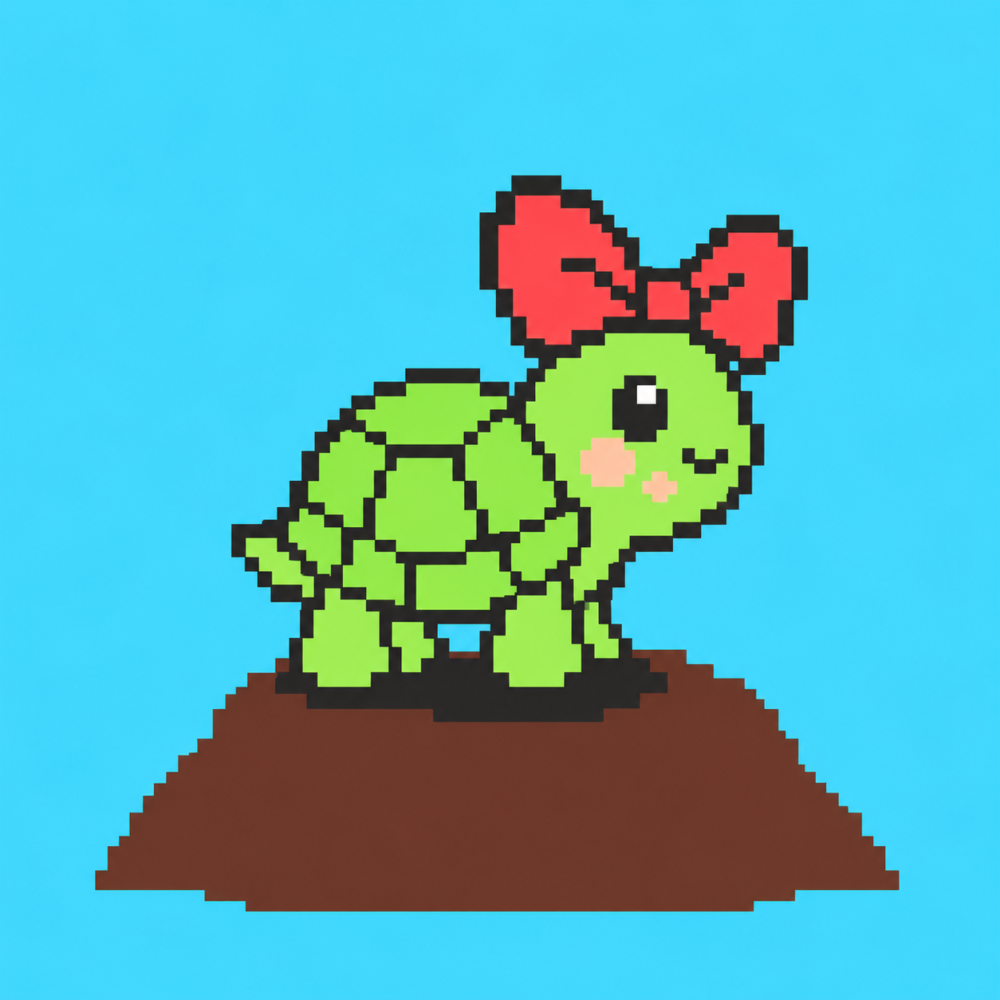
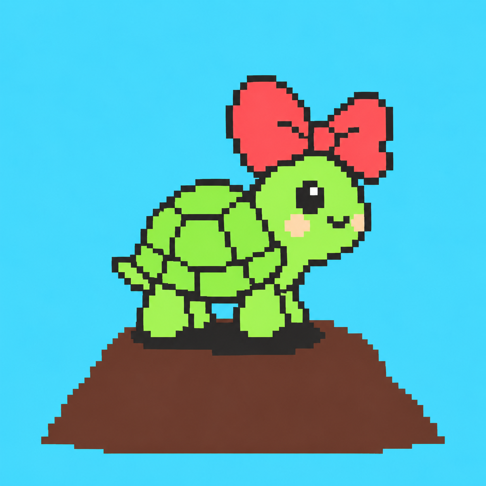
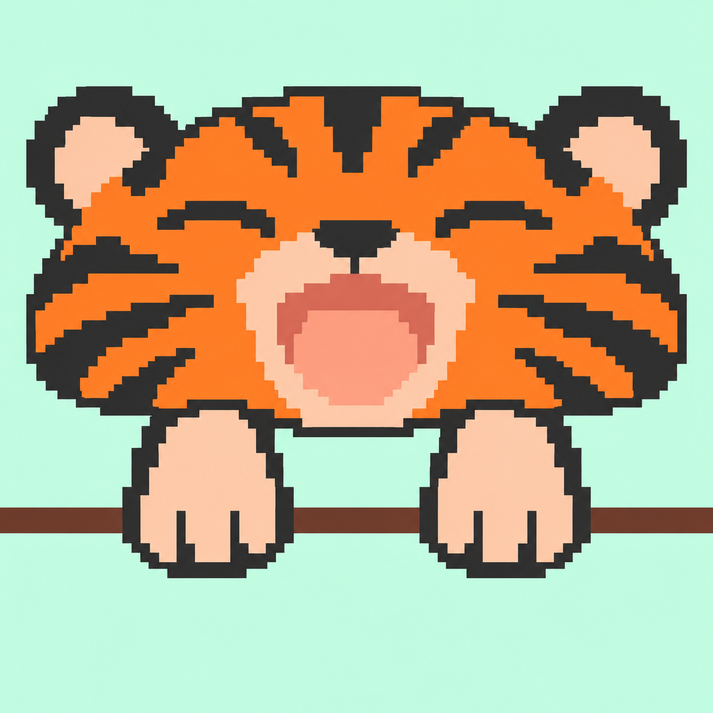
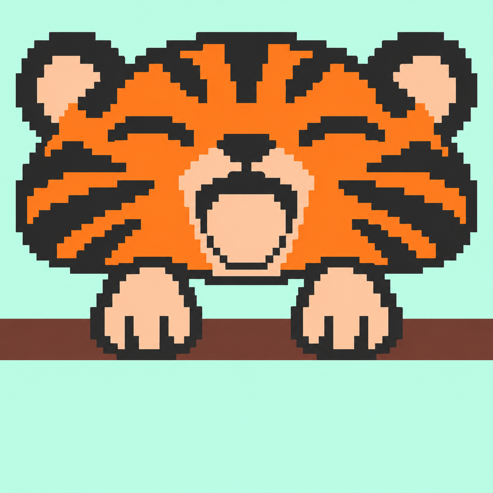
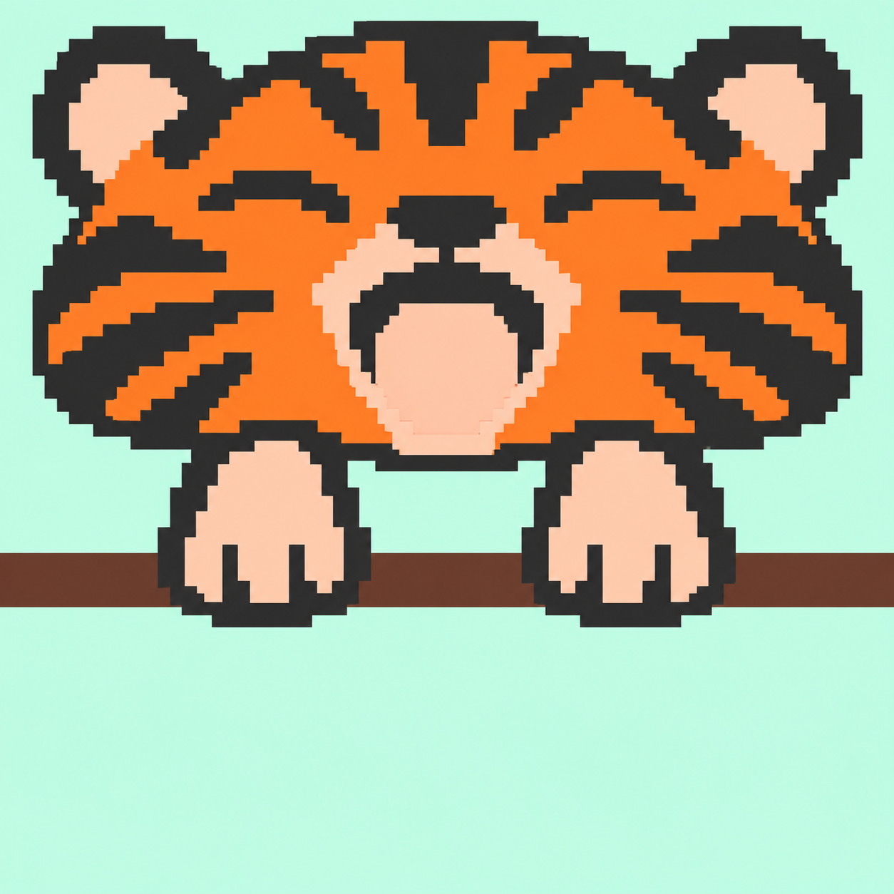
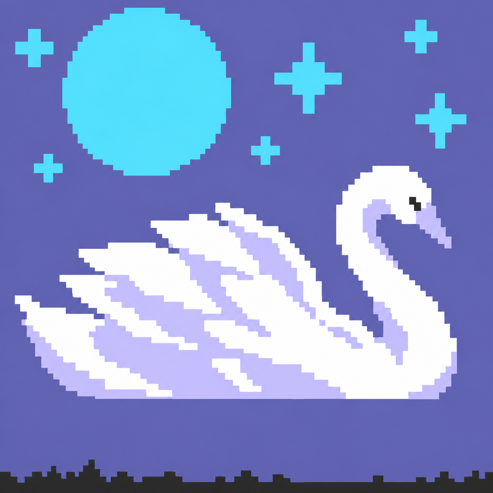
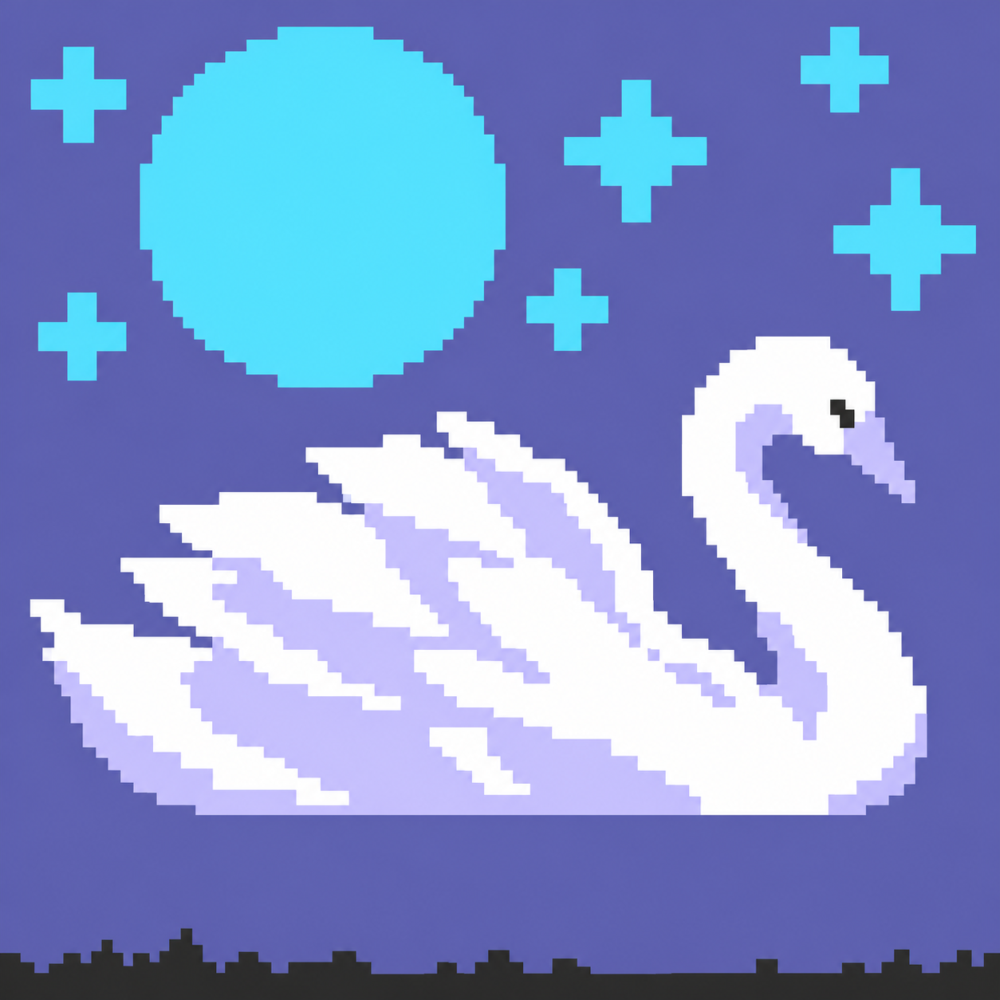

指定原图
第4关-游泳圈小黄鸭-04.png
下载原图
原图面积近似统计
| 颜色 | 面积 | 折算格数¹ |
|---|---|---|
| #2982F4 | 52.52% | 1890.5 |
| #FFDF48 | 26.11% | 939.9 |
| #2D2D2D | 9.47% | 341.0 |
| #FF7E27 | 10.41% | 374.8 |
| #FF525B | 1.30% | 47.0 |
| #FFFFFF | 0.19% | 6.8 |
5 关 × 2 张 · 内置图片编辑 · 1254 × 1254 原始 PNG
各关依次为指定原图、05、06。原图保持不变；所有修改稿按字节保存。当前为原图候选，尚未转换或验收。
第 23 关已按你的选择：优先完整月亮和顶部位置，以星星补浅蓝面积。
两张均保留原构图并扩大眼睛高光。06 的白色面积折算约 19.5 格，比原图约 6.8 格增加，但仍少于文档约 24 格；05 约 13.5 格。需要转换后确认是否仍超补齐上限。
第4关-游泳圈小黄鸭-04.png
下载原图| 颜色 | 面积 | 折算格数¹ |
|---|---|---|
| #2982F4 | 52.52% | 1890.5 |
| #FFDF48 | 26.11% | 939.9 |
| #2D2D2D | 9.47% | 341.0 |
| #FF7E27 | 10.41% | 374.8 |
| #FF525B | 1.30% | 47.0 |
| #FFFFFF | 0.19% | 6.8 |
第4关-游泳圈小黄鸭-05.png
下载原图| 颜色 | 面积 | 折算格数¹ |
|---|---|---|
| #2982F4 | 52.52% | 1890.9 |
| #FFDF48 | 26.13% | 940.6 |
| #2D2D2D | 9.30% | 334.7 |
| #FF7E27 | 10.37% | 373.2 |
| #FF525B | 1.31% | 47.1 |
| #FFFFFF | 0.38% | 13.5 |

第4关-游泳圈小黄鸭-06.png
下载原图| 颜色 | 面积 | 折算格数¹ |
|---|---|---|
| #2982F4 | 52.54% | 1891.3 |
| #FFDF48 | 26.16% | 941.8 |
| #2D2D2D | 9.05% | 325.7 |
| #FF7E27 | 10.40% | 374.4 |
| #FF525B | 1.31% | 47.3 |
| #FFFFFF | 0.54% | 19.5 |
06 的红色约 3.52%、绿色约 8.82%，蝴蝶结缩小幅度更接近要求；脸颊面积增加，沙丘下沿约在底边以上 7%。沙丘延长后棕色面积明显增加（约 15.6%），仍可能导致转换超限。05 蝴蝶结缩得偏多。

第7关-乌龟三稿-01.png
下载原图| 颜色 | 面积 | 折算格数¹ |
|---|---|---|
| #46D9FF | 70.95% | 2554.2 |
| #2D2D2D | 6.33% | 228.0 |
| #92EF4D | 7.76% | 279.4 |
| #65392D | 10.76% | 387.4 |
| #FF525B | 4.03% | 145.2 |
| #FFCAA9 | 0.16% | 5.7 |

第7关-乌龟三稿-05.png
下载原图| 颜色 | 面积 | 折算格数¹ |
|---|---|---|
| #46D9FF | 67.90% | 2444.4 |
| #2D2D2D | 6.81% | 245.2 |
| #92EF4D | 8.32% | 299.4 |
| #65392D | 14.32% | 515.5 |
| #FF525B | 2.33% | 83.8 |
| #FFCAA9 | 0.32% | 11.7 |

第7关-乌龟三稿-06.png
下载原图| 颜色 | 面积 | 折算格数¹ |
|---|---|---|
| #46D9FF | 65.14% | 2345.2 |
| #2D2D2D | 6.64% | 239.2 |
| #92EF4D | 8.82% | 317.5 |
| #65392D | 15.57% | 560.4 |
| #FF525B | 3.52% | 126.9 |
| #FFCAA9 | 0.30% | 10.8 |
嘴内红色已替换，肤色减少、条纹与木头加粗。06 明显上移，橙色下部 1% 分位约在底边以上 51.6%。木头也随爪子有上移，橙色总面积偏少，仍须转换检查；05 上移幅度较小。

第9关-打哈欠小老虎-03.png
下载原图| 颜色 | 面积 | 折算格数¹ |
|---|---|---|
| #C5FFE4 | 48.36% | 1741.1 |
| #FF7E27 | 18.67% | 672.2 |
| #2D2D2D | 16.75% | 603.0 |
| #FFCAA9 | 13.69% | 492.8 |
| #65392D | 2.53% | 91.0 |

第9关-打哈欠小老虎-05.png
下载原图| 颜色 | 面积 | 折算格数¹ |
|---|---|---|
| #C5FFE4 | 44.98% | 1619.3 |
| #FF7E27 | 17.04% | 613.3 |
| #2D2D2D | 22.35% | 804.7 |
| #FFCAA9 | 9.94% | 357.7 |
| #65392D | 5.70% | 205.1 |

第9关-打哈欠小老虎-06.png
下载原图| 颜色 | 面积 | 折算格数¹ |
|---|---|---|
| #C5FFE4 | 47.12% | 1696.4 |
| #FF7E27 | 16.45% | 592.4 |
| #2D2D2D | 21.62% | 778.3 |
| #FFCAA9 | 10.80% | 388.9 |
| #65392D | 4.00% | 144.1 |
主体延伸至全底边，最下面 7/60 高度内的蓝色原图近似占比从 18.41% 降为 05 的 0.13%、06 的 0.08%（可能包含边缘偏色）。橙球增大、白肚皮收小；浅蓝水花增加偏多，原图总浅蓝约 8.23% / 7.88%，待转换筛选。
第15关-推皮球小虎鲸-04.png
下载原图| 颜色 | 面积 | 折算格数¹ |
|---|---|---|
| #2982F4 | 51.10% | 1839.8 |
| #2D2D2D | 30.97% | 1114.8 |
| #FF7E27 | 6.18% | 222.6 |
| #FFFFFF | 7.23% | 260.3 |
| #46D9FF | 4.51% | 162.5 |
第15关-推皮球小虎鲸-05.png
下载原图| 颜色 | 面积 | 折算格数¹ |
|---|---|---|
| #2982F4 | 44.62% | 1606.4 |
| #2D2D2D | 34.85% | 1254.5 |
| #FF7E27 | 6.60% | 237.6 |
| #FFFFFF | 5.70% | 205.3 |
| #46D9FF | 8.23% | 296.1 |
第15关-推皮球小虎鲸-06.png
下载原图| 颜色 | 面积 | 折算格数¹ |
|---|---|---|
| #2982F4 | 45.22% | 1628.0 |
| #2D2D2D | 34.37% | 1237.3 |
| #FF7E27 | 6.57% | 236.6 |
| #FFFFFF | 5.96% | 214.4 |
| #46D9FF | 7.88% | 283.8 |
采用用户选择的完整月亮与顶部位置优先，湖面倒影已去掉，星星增大。06 浅蓝下部 1% 分位约在底边以上 62.6%，但浅蓝总面积约 13.9%，仍少于 20%；取消倒影后靛蓝偏多、淡紫偏少。后一次更大星星稿因下探过低弃用，未混入交付。
第23关-月光白天鹅-04.png
下载原图| 颜色 | 面积 | 折算格数¹ |
|---|---|---|
| #696CAF | 43.06% | 1550.2 |
| #FFFFFF | 18.31% | 659.2 |
| #46D9FF | 14.27% | 513.7 |
| #C8C5FF | 21.22% | 763.9 |
| #2D2D2D | 3.14% | 112.9 |

第23关-月光白天鹅-05.png
下载原图| 颜色 | 面积 | 折算格数¹ |
|---|---|---|
| #696CAF | 59.32% | 2135.5 |
| #FFFFFF | 16.63% | 598.5 |
| #46D9FF | 11.22% | 404.0 |
| #C8C5FF | 9.63% | 346.8 |
| #2D2D2D | 3.20% | 115.2 |

第23关-月光白天鹅-06.png
下载原图| 颜色 | 面积 | 折算格数¹ |
|---|---|---|
| #696CAF | 55.83% | 2009.8 |
| #FFFFFF | 16.81% | 605.1 |
| #46D9FF | 13.87% | 499.2 |
| #C8C5FF | 9.83% | 353.9 |
| #2D2D2D | 3.67% | 132.0 |